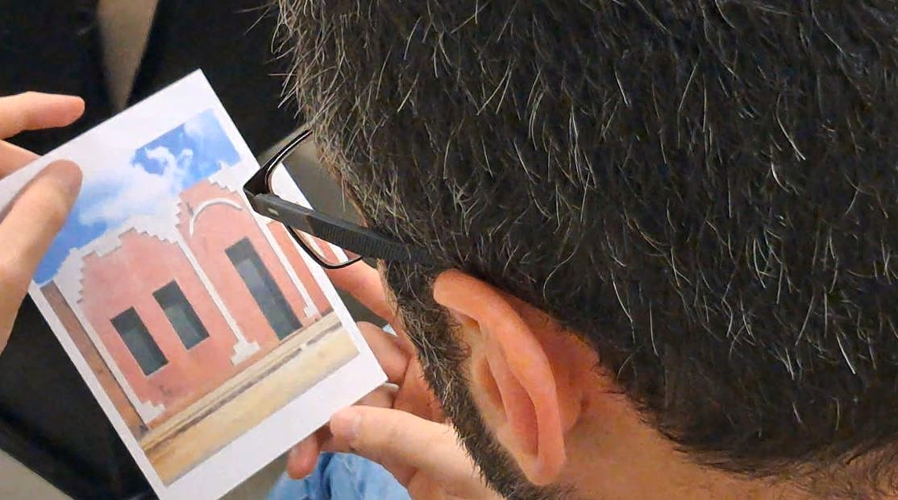
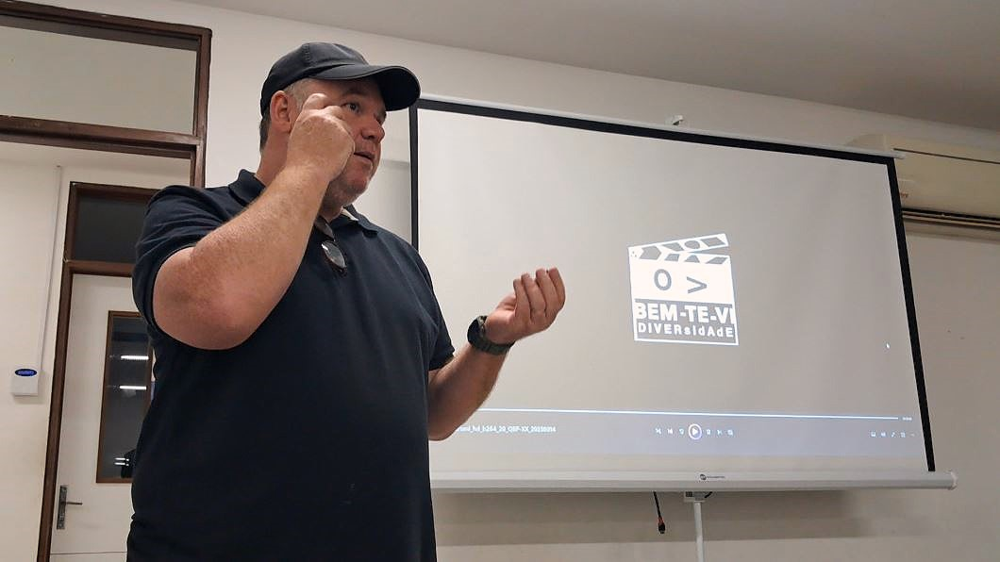
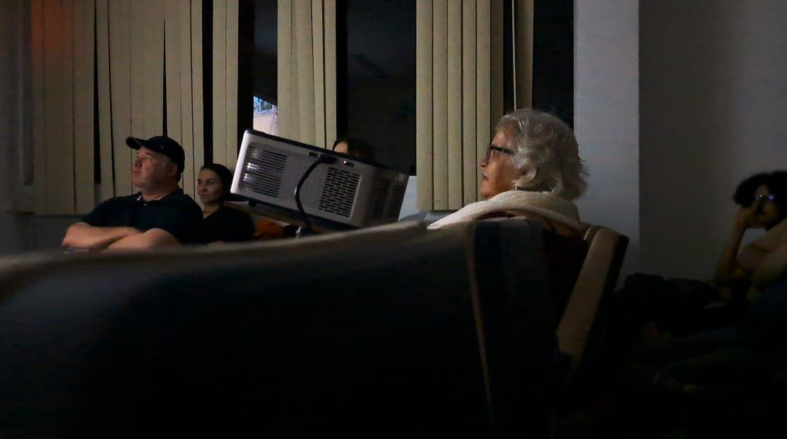
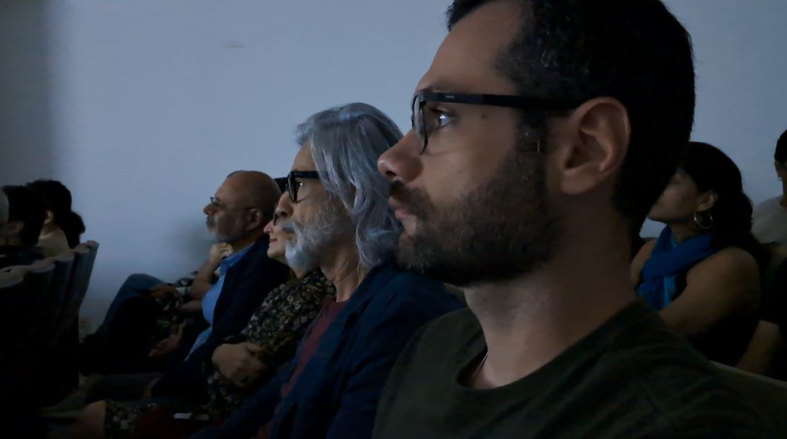
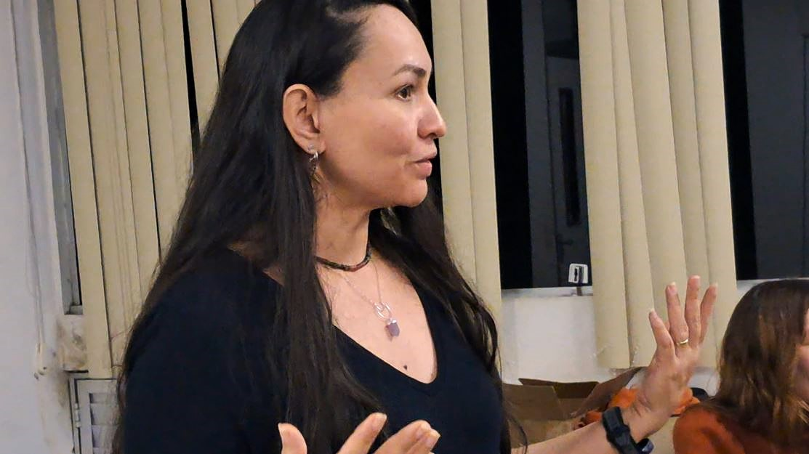

As fachadas coloridas de pequenas casas, as platibandas ornamentadas e as paisagens do semiárido atravessaram novamente Campina Grande em agosto. O documentário Anna Mariani – Anotações Fotográficas, dirigido por Alberto Renault, teve sessões na Casa 233 e na Universidade Federal de Campina Grande (UFCG), acompanhadas de conversas com o público sobre a obra e o percurso da fotógrafa.
O filme recupera os caminhos que levaram Anna Mariani à realização de dois trabalhos de referência de sua produção: Pinturas e Platibandas, publicado originalmente em 1987, e Paisagens, impressões: o semi-árido brasileiro, de 1992. A própria fotógrafa conduz a narrativa, na voz de Regina Casé. Textos de Lina Bo Bardi, Caetano Veloso, Ariano Suassuna e Jean Baudrillard, lidos por Tom Zé, João Miguel e outros participantes, ajudam a contextualizar as imagens e a experiência de Mariani pelo interior nordestino.

Das fachadas ao sertão
Ao longo de sua trajetória, Anna Mariani voltou sua câmera para o sertão e para aspectos da vida e da cultura da região. Em Pinturas e Platibandas, seu olhar se deteve especialmente sobre a arquitetura popular. Fachadas fotografadas frontalmente, muitas vezes marcadas por cores intensas e ornamentos geométricos, formaram um extenso inventário visual produzido em diferentes estados do Nordeste.
O trabalho reuniu mais de duas mil fotografias e levou para o centro da imagem construções que poderiam passar despercebidas no cotidiano. A própria Mariani reconhecia nessas fachadas manifestações da cultura popular, nas quais tradições, memórias e novas influências se misturavam às escolhas dos moradores e dos mestres responsáveis pelas construções.

A Paraíba está presente nesse percurso. Entre os registros da série encontram-se, por exemplo, fachadas fotografadas em Ingá em 1987. O trabalho alcançou a XIX Bienal Internacional de São Paulo e posteriormente circulou por outros países.
Já em Paisagens, impressões: o semi-árido brasileiro, o olhar se amplia para o território. Vegetação, chão, animais, luz e transformações da paisagem compõem outro registro do sertão, novamente distante de uma representação exclusivamente marcada pela aridez.

Cinema e conversa em Campina Grande
A primeira das sessões realizadas em Campina Grande aconteceu em 8 de agosto, na Casa 233, espaço cultural instalado no Centro da cidade. Depois da exibição, o público participou de uma conversa sobre o filme e o trabalho da fotógrafa. Reproduções de imagens de Pinturas e Platibandas e Paisagens, impressões também foram distribuídas aos participantes.
Na UFCG, o documentário integrou dois dias de programação no Auditório do Centro de Humanidades. Em 10 de agosto, a sessão reuniu o fotógrafo Augusto Pessoa e participantes da Grão Fino Semana de Fotografia, evento promovido pelos cursos de Arte e Mídia da UFCG e Jornalismo da Universidade Estadual da Paraíba (UEPB).

No dia seguinte, uma nova sessão foi promovida pelo Cineclube Memorial, Cineclube Timbu e Coordenação Geral de Arte e Cultura da Pró-Reitoria de Extensão da UFCG (PROPEX), com apoio da Grão Fino e da Unidade Acadêmica de Arte e Mídia. Novamente, a projeção foi seguida por debate.
Augusto Pessoa, Cristina Melo e Pedro Gomides vêm acompanhando a circulação do documentário, participando das exibições e das conversas com o público sobre o trabalho de Anna Mariani.
Fotografias que retornam aos seus territórios
As sessões de Campina Grande fazem parte de uma circulação mais ampla de Anna Mariani – Anotações Fotográficas pelo Nordeste. Na Paraíba, o percurso também passou por Areia e seguiu para Taperoá, onde o filme foi apresentado na Casa Museu de Ariano Suassuna. Em outra etapa, o documentário chegou à comunidade quilombola do Terreiro de Maria de Tiê, em Porteiras, no Ceará.

Há nessa circulação uma relação particular com a trajetória da fotógrafa. Durante as conversas realizadas em Campina Grande, foi apresentado ao público o propósito de retornar a lugares percorridos por Anna Mariani, procurando casas e pessoas relacionadas aos seus registros e produzindo novos materiais a partir desses reencontros.
Décadas depois das viagens que deram origem às fotografias, as imagens começam, assim, a fazer também o caminho de volta. As casas, paisagens e comunidades que estiveram diante da câmera de Anna Mariani passam a receber um filme construído a partir daquele olhar — e a participar de uma nova etapa de seu registro.
Saiba mais
Conheça mais sobre a trajetória e a obra de Anna Mariani no acervo do Instituto Moreira Salles e acompanhe a circulação de Anna Mariani – Anotações Fotográficas pelo perfil do projeto no Instagram.